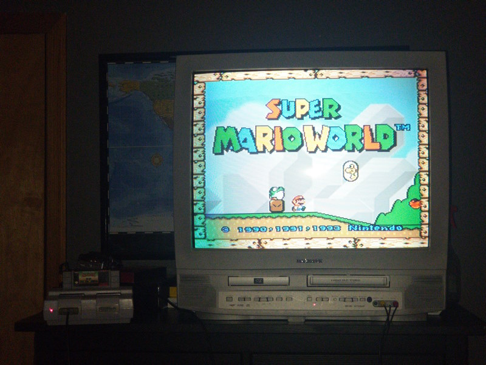

July 1st 2025 -
I just finished cleaning my room up after 6 hours of cleaning yesterday, and a couple of days of organizing before that. I haven't cleaned it up this much since at least around January of 2023. The problem with that is that I was much younger and naive so I never really took care of my room up until atleast late 2024, and lately I've been getting sick and tired of my room stuck being like this, as I had to basically take care of the mistakes of my younger self, so I took matters into my own hands and started organizing a few days ago with me and my mom.
I'm basically finished cleaning and all I have to do is decorate my room with posters, and other things, and I'll probably have to do that today. But I'm really excited to see the end product :)
June 27nd 2025 -
Shout out star wars
June 2nd 2025 -
24 bit colour. Why is is still the standard? Why is still used in 95% of devices? This is a question I've been asking myself for years on end. For one thing, it simply is just not enough colours. You may be thinking, oh 16 million colours is like A LOT!1 and yes this is true, but for dark gradients it is absolutely TERRIBLE, you can very clearly see banding on anything below #404040 (which is 64, 64, 64 in rgb respectively) for example heres a gradient from 0,0,0 (black) to 64,64,64 (gray)
It may be hard to see, considering my pure white website background, but if you open it in your browser, you can CLEARLY see where each colour ends and starts. Now for MOST instances, you're not going to notice it, but for things such as the sky, and dark gradient backgrounds, you're for SURE going to notice it now. For example this is the youtube ambient mode on dark mode, and you can clearly see banding (especially when in motion and it's changing) Image Link It's really sad that the support for it on Windows and I think Linux is abysmal. Which causes monitor manufactors to just develop standard 8 bit colour monitor. I'm not even asking for HDR, all I want it just more colours. Sure it does seem very nitpicking for something that you won't really notice unless your deliberatly looking for it. But this issue should've been eliminated by the mid 2000s, we 1000% have the technology for 30 bit (10 bit/channel) 36 bit (12 bit/channel) and 48 bit (16 bit/channel) colour. Simply because some companies just didn't bother.
June 1st 2025 -
Wow its already the 6th month of 2025, how is that possible the year JUST started are you kidding me, it feels like the year is already nearly over, because we ONLY got summer and the first couple months of school then its 2026. But I feel like people forget how long summer break really is (including myself) because summer break is usually around ~75-90 days for most people, 85 for me, and that obviously sounds long, but it flies by so fast. So people automatically think summer is short. But if you were to subtract 85 days from June 1st 2025, you'd get March 8th 2025, which is insane to me because that felt like a enternity ago as it was still snowing by early March. But when I compare September 2024 and June 2024, it felt like a very short distance as I did barely anything for summer. Because for summer time, I mainly just stay inside on my computer most of the time. This is why for this year, I'm gonna do my best to make every day interesting. Luckily for me, I hopefully should be getting a J*b (sorry for the slur) at Food Lion. I hope its not as bad as McDonalds, for anyone reading this, do NOT work at McDonalds, it was sure of a learning experience.
April 22nd 2025 -
I just got a new CRT tv (well not neccessarily new, but I got it down from my parents attic) I am very excited to do some cool things with it. I've already connected a Xbox 360, Wii U and SNES to it, and I've recorded some cool things to VHS tape, all I am missing is the TV remote so I can configure the settings (for example setting it to LP VHS mode, instead of SP) and degaussing the thing because theres spots on the TV that are all messed up in colour, but other than that, its a great CRT.

Full Resolution Image (2.12mb)
April 14th 2025 -
I'm actually gonna start doing something with this page lmao. Anyways I've been recently building really shittily in this minecraft 1.1 world I have, and it's been really fun turning my brain off and building on the same level as 6 to 7 year old me. I've been worrying too much about things "looking good" and perfecting things, but in reaity. I think it's better for me to not worry about any of that
Full Resolution Image (2.30mb)
February 7th 2025 -
This is the first entry in my blog, hi guys, I finally updated my website after like 3 months or so I think.
© 2024 - 2025 Jory
{kind=link}
{kind=link}